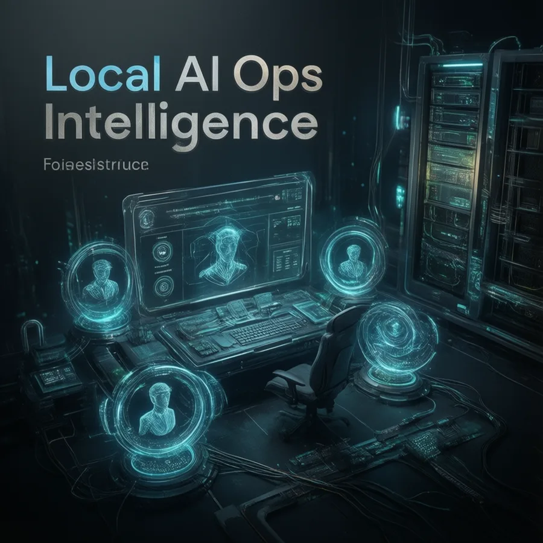

Бесплатный выпуск
0 ₽
Пять вопросов до покупки локального ИИ и признаки ложной автоматизации.
ОткрытьПлатная аналитика · шаблоны · самостоятельное применение
Сжатые решения для тех, кто выбирает локальные модели, серверы и агентные процессы и не хочет платить за железо или автоматизацию до проверки реальной нагрузки.

Что получает покупатель
Матрица «локально, API или гибрид»
Проверка нагрузки и ограничений до покупки
Шаблон evidence-first оценки
Чек-лист готовности агентного процесса
Правила внешних действий и отката
Повторяемый шаблон недельного решения
Открытый пилот
0 ₽
Пять вопросов до покупки локального ИИ и признаки ложной автоматизации.
Открыть0 ₽
Сравнение локального сервера, API и облака с явными допущениями.
РассчитатьПока не предлагается. Он появится только после проверки спроса и подготовки самостоятельного материала, который действительно стоит денег.
Проверка интереса